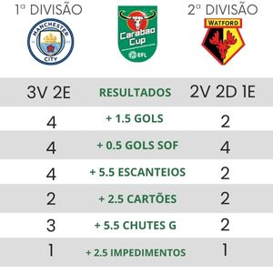
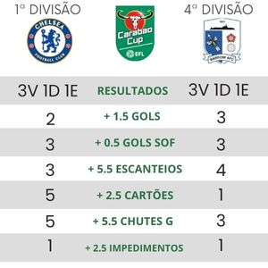
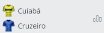
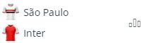
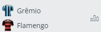
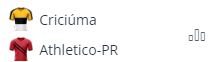

1º Hulk + 0.5 G
SportingBET
Bilhete 1
Chance dupla: Somente os favoritos
- 1º Atletico MG ✅
- 2º Palmeiras✅
- 3º Cruzeiro ✅
- 4º São Paulo ✅
- 5º Flamengo ✅
- 6º Atletico PR ✅
Bilhete 2
Substituir chance dupla por mais/menos gols nos jogos duvidos, mesmo tendo um favorito
- 1º Atletico MG ✅
- 2º Palmeiras +1.5⚽
- 3º Cruzeiro ✅
- 4º São Paulo ✅
- 5º Flamengo +1.5⚽
- 6º Atletico PR ✅
Bilhete 3
Aplicar chance dupla no menos favorito, caso exista uma boa probabilidade dele vencer
- 1º Atletico MG ✅
- 2º Vasco 🦓
- 3º Cruzeiro ✅
- 4º São Paulo ✅
- 5º Flamengo ✅
- 6º Atletico PR ✅
Bilhete 3.1
Aplicar chance dupla no menos favorito, caso exista uma boa probabilidade dele vencer
- 1º Atletico MG ✅
- 2º Palmeiras ✅
- 3º Cruzeiro ✅
- 4º São Paulo ✅
- 5º Gremio 🦓
- 6º Atletico PR ✅
Bilhete 4
Chute no gol: Escolher no máximo 2 jogadores por partida